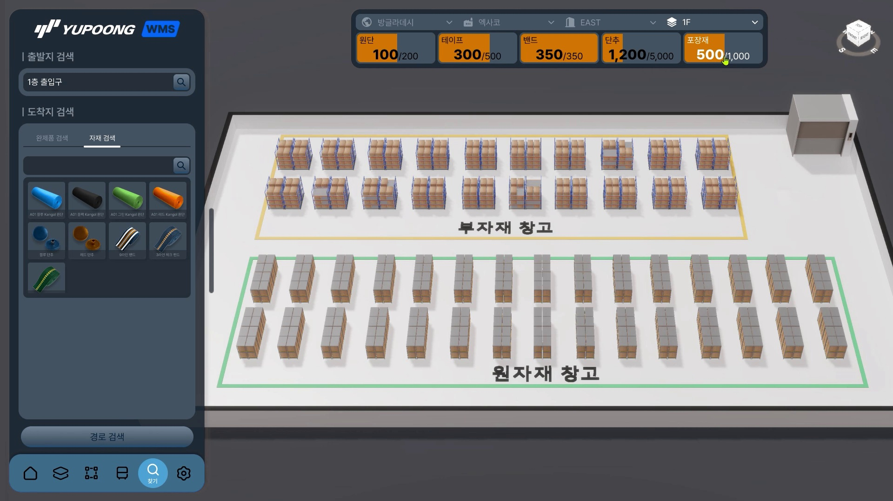
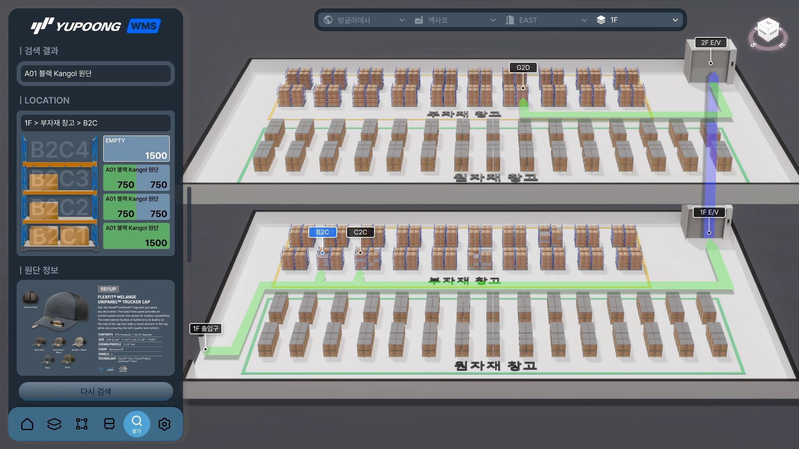

유풍 창고 관리 시스템(WMS) 개요
카드로 정리된 WMS 기획 제안 및 핵심 용어
유풍 창고 관리 시스템(WMS) 개요
디지털 트윈 기반 창고관리시스템(WMS) 기획 제안 및 핵심 운용 프로세스
시스템 기획 개요 및 프로세스 흐름
본 유풍 창고 관리 시스템(WMS, Warehouse Management System) 프로젝트는 3D 디지털 트윈 환경을 구축하여 공장 → 건물 → 층 → 범위 → 구역 → 랙 → 단에 이르는 로케이션 계층 구조를 직관적으로 조망하고, 최적 자재 배치 및 층간 승강기(E/V) 연계 경로 검색을 제공합니다.
graph TD
A[1. 출발지 & 도착지 검색 조건 입력] --> B[2. 자재/완제품 분류 탭 및 품목 슬롯 선택]
B --> C[3. 선택 층 재고 및 여유공간 인디케이터 확인]
C --> D[4. 최적 랙 Location ID 도출: B2C / G2D]
D --> E[5. 1F 출입구 ➔ E/V ➔ 2F 3D 이동 경로 렌더링]
E --> F[6. 3D 빌보드 기점 및 작업자 가이드 제공]
1F 선택층 현황 & 자재 인디케이터
국가, 공장, 건물, 층 드롭다운 선택 시 상단에 원단, 테이프, 밴드, 단추, 포장재의 재고/여유공간이 인디케이터 바 형태로 즉시 조망됩니다.

3D 층간 E/V 연계 최적 경로 가이드
1F 출입구부터 1F E/V, 2F E/V를 거쳐 2F 부자재 창고의 G2D 랙까지 이어지는 수평/수직 이동 동선을 3D 그린 라인 및 빌보드로 안내합니다.

WMS 핵심 용어 및 구조 명세
| 용어 (Term) | 기능 명칭 | 핵심 내용 및 편집 기능 명세 |
|---|---|---|
| 층 (Floor) | 층 편집 | 층별 면적 정보 입력 시 해당 건물에 자동으로 층 생성 및 층별 창고 현황을 조망할 수 있습니다. |
| 범위 (Zone) | 범위 편집 | 자재 및 완제품 별로 구분되는 영역. 저작도구를 이용해 층 내 범위를 생성하고 정보 확인이 가능합니다. |
| 구역 (Area) | 구역 편집 | 작업자 동선으로 구분되는 랙(Rack)의 집합. 행/열 개수 및 정렬방식, 랙 타입을 지정하여 자동 교차점 배치합니다. |
| 단 (Level) | 단 (ID) | 랙의 층 단위. 랙의 단별로 자동 Location ID가 부여되며 자재 및 완제품 등록/재고 및 여유공간 현황을 파악합니다. |